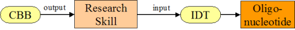

Beyond the Enterprise: Taking REA to Higher Levels
Robert Haugen, Mikorizal Software
from http://sensorweb.geoict.net/whatIsSensorWeb.htm
Introduction
REA is usually presented as an enterprise accounting model. But it can also be used for higher-level economic analyses, which can connect individual enterprises into larger economic formations. No other accounting model is so adaptable. In this context, it is apt to think of REA as a general-purpose economic ontology.
The REA Ontology quotes Ijiri as saying "...the economic activities of an entity are a sequence of exchanges of resources - the process of giving up some resources to obtain others." Those exchanges of resources do not stop at the boundaries of a single company. They extend across many individuals and organizations, across industries, regions or the whole planet. And they can be aggregated at higher levels: for example, all exchanges involving an economic resource or economic agent type.
In this presentation, we will look at several higher-level economic formations in REA terms: supply chains, value systems, business clusters, regional economies, ecosystems, input-output graphs and world models.
The economic relationships in each of these higher-level formations can be modeled using the REA ontology: Economic Resources, Events, Agents, Commitments, and Resource, Event and Agent Types. That is, the models for larger formations can be REA models. This paper suggests some optional additions and extensions, but the main differences between internal REA enterprise models and REA models for larger formations are:
- the higher-level models deal with many enterprises;
- the resources, events and agents are usually aggregates or types rather than individuals;
- the models take the independent instead of internal enterprise view.
Why is this important?
The Internet is the most obvious example of an external network that is more relevant to business than most internal accounting systems.
Many - maybe most - of the economic events in the world are collected in databases at Google, Amazon, banking systems, the US intelligence apparatus, etc. It's too late to decide if this is a good or bad thing. It has already happened.
REA gives us a way to think about these economic events in all of their interconnections. To reason over them. To make intelligent decisions about what should happen as a result.
Many - maybe most - enterprises now find their greatest challenges not in their internal operations but in their external relationships with markets and partners. They become outward-facing rather than inward-facing.
In many parts of the world, government, academic and business organizations work on business clusters and regional economies rather than individual enterprises.
Moreover, with the rise of globalization, global warming and the end of cheap oil, factors that were once economically relegated to "externalities" are becoming more critical to everyone.
Supply Chains and Value Systems
Supply chains, which have been modeled in REA terms several times, are composed of the chains of material suppliers to an individual manufacturing company. For example, the January 2000 REA, a semantic model for Internet supply chain collaboration and Supply Chain Modeling with REA which focuses a lot on transportation.
A value system is a broader concept, which consists of all the interconnected economic agents and resource inputs involved in bringing a product or service type to its end consumers.
Both supply chains and value systems are modeled in REA by chains of alternating conversion and exchange processes, connected by output-input stock flows. These chains will also be used in all of the other larger economic formations below, except the larger formations will use larger aggregate resource, agent and process types.
Below is a simple REA value system model. Note that this model includes families as both producers and consumers. Why don't enterprise systems embrace their employees' families?
The breakout box on the right in the diagram above may be a bit difficult to read, but it shows Bill McCarthy's standard internal enterprise REA diagram, where the F, P, M and S in the Retail Goods Manufacturer box translate to Finance, Procurement, Manufacturing and Sales in the breakout box.
Business Clusters
A business cluster is a geographic concentration of interconnected businesses, suppliers, and associated institutions in a particular field. Clusters are considered to increase the productivity with which companies can compete, nationally and globally.
This concept, also known as a competitive cluster, industry cluster or Porter's cluster, was first developed by Michael Porter in 1990.
http://en.wikipedia.org/wiki/Business_cluster
In order to model business clusters in REA, it is often useful to create a looser precursor of Commitments that might be called Needs (for Economic Resource Types) and Abilities (to provide Economic Resource Types). Needs and Abilities are not commitments, they are not yet connected to any other Economic Agent. Each is like one half of a commitment, looking for its mate.
Needs in the form of offers to buy might be called Demands. Likewise, abilities in the form of resources available-to-promise might be called Supplies.
Some examples from the Iowa Biotech business cluster:
IDT needs Research and Engineering Skills and has the ability to provide Oligonucleotides.
The Iowa University CBB has the ability to provide the necessary Research Skills and IDT could even farm out some of their fermenting work to the Iowa U GLP Lab.
Here we mate the Research Skill Ability and Need:
Internet aggregators register and compute upon Needs all the time:
They even suggest things they think we might want, based on our search and buying history:

Input-Output Graphs
The Input-output model of economics uses a matrix representation of a nation's (or a region's) economy to predict the effect of changes in one industry on others and by consumers, government, and foreign suppliers on the economy. Wassily Leontief (1906-1999) is credited with the development of this analysis.
http://en.wikipedia.org/wiki/Input-output_model
| Economic Activities | Inputs to Agriculture | Inputs to Manufacturing | Inputs to Transport | Final Demand | Total Output |
|---|---|---|---|---|---|
| Agriculture | 5 | 15 | 2 | 68 | 90 |
| Manufacturing | 10 | 20 | 10 | 40 | 80 |
| Transportation | 10 | 15 | 5 | 0 | 30 |
| Labor | 25 | 30 | 5 | 0 | 60 |
REA might model those relationships like this table below, which of course is easily transformable to the I-O table above. The Sectors are aggregate Economic Agent Types, and the Resource Type is also usually an aggregate.
| FromSector | ToSector | ResourceType | Quantity |
|---|---|---|---|
| Agriculture | Agriculture | FarmProducts | 5 |
| Agriculture | Manufacturing | FarmProducts | 15 |
| Agriculture | Transport | FarmProducts | 2 |
| Agriculture | Consumers | FarmProducts | 68 |
| Manufacturing | Agriculture | ManufacturedProducts | 10 |
| Manufacturing | Manufacturing | ManufacturedProducts | 20 |
| Manufacturing | Transport | ManufacturedProducts | 10 |
| Manufacturing | Consumers | ManufacturedProducts | 40 |
| Transport | Agriculture | TransportService | 10 |
| Transport | Manufacturing | TransportService | 15 |
| Transport | Transport | TransportService | 5 |
| Labor | Agriculture | LaborService | 25 |
| Labor | Manufacturing | LaborService | 30 |
| Labor | Transport | LaborService | 5 |
Regional Economies
Regional economic analyses often use input-output tables. For example:
Input-output tables can quantify strengths, weaknesses and opportunities of large aggregate economic agents, for example, Developing Economies in Sub-Saharan Africa.
Ecosystems
Human beings need to get past the part of the definition of an economic resource as being "under the control of an enterprise", and consider all the necessities of all life to be resources: air, water, soil fertility, etc. And we need to track the input-output relationships among the enterprises and these so-called "externalities": e.g. air and water pollution, soil degradation, mad cow disease, global warming.
World Models
Several methods of modeling large ecosystems exist. One popular model is System Dynamics, which can be integrated easily with REA models.
System Dynamics models consist of interconnected Stocks and Flows of Resources. Flows increase or decrease Stocks, as do Stock Flows in REA.
from http://sysdyn.clexchange.org/sdep/Roadmaps/RM9/D-4480.pdf
from http://www.wellstorm.com/solution/
By plugging REA data from sensors and other sources into the stocks of Wells and Petroleum Reserves, and the rates of drilling and extraction, such models could become grounded in the real world. Then they can simulate into the future from realistic starting points, and compare their predictions to unfolding events.
The Economic Nervous System
Signals from bar code readers in retail checkout lines (economic events) trigger receptors at packaged goods companies. Hospital economic event signals trigger receptors at insurance companies. As we've seen, Web shopping economic events trigger receptors at Amazon, eBay, etc.
The ripple effects of these signals usually extend no more than one or two tiers into the affected supply chains. But this will change.
Those are demand signals. Now we are seeing signals coming the other way, from the supply side, like the oil well sensors depicted above. Below is a wireless farm field sensor, that monitors soil and weather conditions and can help to predict crop yields:
Field sensors are not yet abilities to provide resources. We might call their combined effect a Potential.
And the combined effect of all of those economic signals and potentials and the reasoning developed on top of them will be the economic nervous system of the planet.
Conclusion
REA economic exchanges can extend across companies, industries, nations, regions and the earth as a whole. REA economic resource and agent types can aggregate data at higher and higher levels.
Integration of REA data at higher levels could give enterprises and individuals views into their surrounding value systems, business clusters, regional economies and ecosystems.
Governmental and regional organizations could operate with current accurate aggregate data for economic analyses and future predictability.
Internet aggregators could follow the dependencies of economic events more deeply, beyond superficial text matches, into the ripple effects of wants and needs and potentials on all the related economic agents.
The signals of economic events, needs and potentials do now and will increasingly propagate through networks of economic relationships that will be forced to look a lot like REA. Those networks will become increasingly intelligent.
What does it all mean for REA practitioners?
- Think bigger.
- Look outward and forward.
- Live on the Web.
- Collaborate with other REA system developers to develop interoperable implementations.
- Follow the chains of economic events wherever they lead.
- Aggregate information from everywhere at REA Type levels.
- Design precursors to Commitments: Demand, Supply, Need, Ability, Potential.
- Develop economic analyses over REA data using econometric, simulation and other algorithms.
Appendix: Reviewer comments and author responses
Reviewer A
I think that the paper would benefit from the integration of REA (enterprise) models; what does this all mean from the perspective of REA modeling
REA enterprises are included in very condensed form (usually in a single bubble) in several of the diagrams. I exploded the company in Figure 3, Value System Flows, to show Bill McCarthy's usual internal enterprise model, and added a new diagram illustrating how the economic formations layer over a company. Probably not adequate, but a bit more suggestive of how the internal and external views might mesh.
Plus, the models for the larger economic formations are REA models. The divisions of economic relationships into companies are arbitrary, anyway: consider the continuous flux of mergers, spin-offs and outsourcing. Today's business cluster or value system may be tomorrow's conglomerate, today's internal process may be tomorrow's outsourced process, and today's integrated enterprise may spawn tomorrow's spin-off.
Reviewer B
Style could be more academic and less 'popular'.
The first version was even less academic than the one reviewed. I would prefer to move it back in the other direction, more popular and less academic. I'm interested in broader adoption of REA, beyond academia where it already has significant traction. For example, I find the current "more academic" version of this paper (the Word doc) significantly more difficult to read than the "more popular" version (this HTML page). But of course your opinion may vary.
Reviewer C
The paper presents an intriguing concept that merits further research, as it may prove beneficial in understanding of large-scale economic phenomena.
Thanks, that is what I am trying to promote.
However, the submitted paper doesn't present a deeper, rigorous analysis of how various aspects of REA ontology may apply in these different contexts (or at least one selected context), and why using them would bring a deeper understanding of context-specific real phenomena occurring there, or whether the REA model is applicable as such in these contexts.
I agree about depth and vigor, but disagree about applicability to the various contexts presented. This is a breadth, not a depth, paper: intended to skim over all of the larger-scale economic formations and analyses where I had some experience and thought REA applied. I co-authored a previous paper that got into a lot of detail on supply chains, and will write again in more detail on some of these contexts. But I thought it would be useful and possibly mind-expanding to look at the breadth of applicable contexts.
Plus, regarding more depth, we only have 30 minutes for the presentation and the paper already has way too much content.
I am eager to get into great detail on any individual context that anybody wants to pursue, either in the question period in the presentation, or afterwards in any setting, but do not want to narrow the scope of the paper.
Reviewer D
I like the wish to extend the REA ontology/model to cover more of the types of analysis done - however I would like to get a more direct link between the different concepts and the REA concepts in order for this paper to contribute to the research of REA.
Did you not find the links between the economic formations and REA concepts in the paper? I thought they were fairly explicit and clear, although a bit terse. I bolded the REA concepts in the revised paper, and added a few more, to make them more explicit.
Supply Chains and Value Systems: Enterprise systems already embrace their employees families when needed in the Human Resource modules and REA can model these things too but this has more to do with what you want to model and nothing with limitations in the REA ontology.
My point was not about limitations in the REA ontology, but limitations in the usual enterprise systems. While Human Resource models do deal with some aspects of employee family economic activities (usually insurance and retirement savings), their penetration is usually very limited. Using REA as a guide, they could do a lot more.
Two possibly extreme examples to get the idea across:
- Accounting software could be provisioned per individual economic agent instead of (or addition to) per company, and aggregated at both the family and company levels. The family's exchanges with the company would be reflected both in the family and company accounts. And the family could use the same software for all of their accounting requirements beyond their relationship with the company.
- Small businesses (e.g. farms) often have trouble mixing their family and business economic events. REA software could allow them to do all of their economic activities in the same system, but keep them separate for legal and tax purposes. This is another feature that I think would be difficult to provide with any other accounting model.
Business Center: Why is a Business Cluster not just a REA group?
It is, and that was my point. But it is (sometimes subtly) different from the usual internal-enterprise REA model.
Why is Needs not just a state of the commitment where it is not fully specified yet.
It could be, but in my experience needs often have properties and behavior that are different from commitments, so in those cases it may work better to model them as separate but possibly related objects. Needs often require more detailed specifications to describe resources that might fit the need, whereas once a commitment is nailed down, the resource type embodies the specifications.
For example, in a recent business cluster model, a manufacturing plant needed land with a long list of requirements such as rail and truck access, a given volume of water, proximity to other feeder plants, etc. It's more like a Request for Proposal item than a purchase order item. When the commitment is made, it will just specify a plot of land that will probably be a compromise, that is, may not satisfy all specs.
Input-Output Graphs: Is this not just a way of viewing at the REA model?
Yes, but usually at a level much higher than one individual enterprise.
What is different and why should the REA ontology cover this?
What is different in all of the larger economic formations is that:
- the models deal with many enterprises, not just a single enterprise, and
- the resources, events and agents are usually aggregates or high-level types instead of individuals, and
- the models take the independent instead of internal enterprise view.
But my point in this paper is that the REA ontology is able to model all of these larger formations, with little or no change. And the analytical methods for larger economic formations can be used over REA information bases quite nicely. I do not mean that the analytical methods themselves should be incorporated into REA.
Regional Economics: What is the relation to REA?
A region is yet another larger economic formation, and can be modeled using the REA ontology, just as any other economic formation can be modeled using the REA ontology. The ontology is not limited to internal enterprise activities.
Ecosystems: What is the relation to REA? Is this not just a special view of the REA model where agents are ignored?
Yes, although it is not necessary to ignore agents in an ecosystem model. It is just necessary to ignore the part of the definition of an economic resource as being "under the control of an economic agent", unless one considers the planet or maybe the global body politic as an economic agent.
Are you sure that all events are economic events? If not all events are economic events then they are not part of the REA model - would they still be in this Dynamic model?
Not all events are economic events; but consumption, production and degradation of economic resources are economic events.
Economic Nervous System: How are Potentials linked to the REA ontology - are they just information? If so then they should not be in a core REA model.
Potentials are information about the future flows of economic resources, and thus may be of interest to an REA model whether one considers them to be "core" or not. I don't, really, but I do consider them to be a motivated extension. Potentials will also be interesting to enterprises that are dependent on future flows, which is why many companies spend a lot of money tracking and analyzing them. For example, the existence or timing of the phenomenon known as "Peak Oil" has huge economic implications not only for oil companies but also for alternative energy, agriculture, transportation, and almost every other industry.